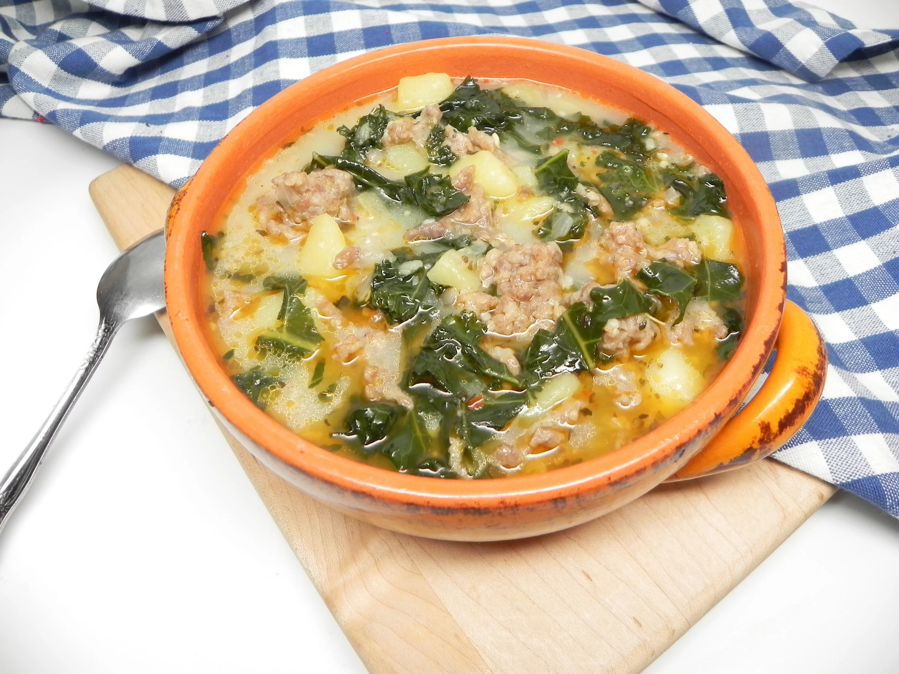

Zuppa Toscana

Description
You're going to love this traditional Italian meal. It is not difficult to recreate the flavour of this dish, just follow the recipe and you're going to love the result!
Ingredients
- 1 tablespoon olive oil
- 1 pound bulk Italian sausage
- 1 large onion, chopped
- 4 cloves garlic, minced
- 1 tablespoon Italian seasoning
- ½ teaspoon salt
- ½ teaspoon ground black pepper
- ¼ teaspoon red pepper flakes
- 4 medium potatoes, cubed
- 4 cups chicken broth
- 4 cups chopped kale
- 1 cup half-and-half
Steps
- Turn on a multi-functional pressure cooker and select Saute function.
- Heat oil in the cooker. Add sausage and cook until no longer pink, about 3 minutes. Stir in onion and garlic; cook until softened and translucent, about 3 minutes. Stir in Italian seasoning, salt, pepper, and red pepper flakes. Add potatoes and chicken broth. Close and lock the lid. Select high pressure and set timer for 5 minutes. Allow 10 to 15 minutes for pressure to build.
- Release pressure using the natural-release method according to manufacturer's instructions, 10 to 40 minutes. Unlock and remove the lid.
- Stir kale into the cooker. Select Saute function. Cook, uncovered, for 2 minutes. Stir in half-and-half. Turn off the cooker and serve.
Home